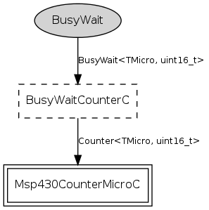

Component: tos.chips.msp430.timer.BusyWaitMicroC
configuration BusyWaitMicroC
Author:
Cory Sharp <cssharp@eecs.berkeley.edu>
See:
Please refer to TEP 102 for more information about this component and its intended use.
Provides
interface
BusyWait
<TMicro, uint16_t>
Wiring
